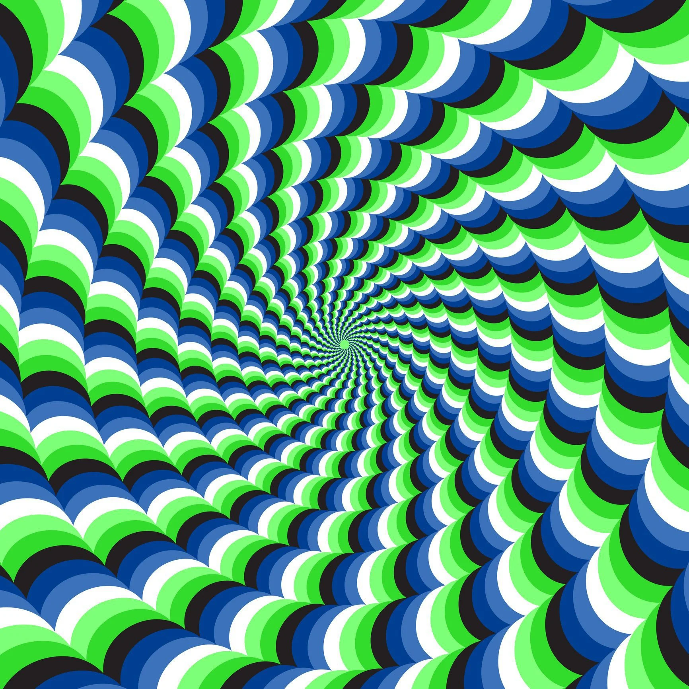

html>
  <head>
    <script src="https://aframe.io/releases/1.3.0/aframe.min.js"></script>
  </head>
  <body>
    <a-scene>
   <a-assets>

   </a-assets>
   
        <a-camera position="0 1.6 0"></a-camera>

      <a-plane position="0 2 -2" width="4" height="4" color="red" side="double" material="src: #murs"></a-plane>
      <a-plane position="2 2 0,5" rotation="0 90 0" width="4" height="4" color="red" side="double" material="src: #murs"></a-plane>
      <a-plane position="-2 2 0,5" rotation="0 90 0" width="4" height="4" color="red" side="double" material="src: #murs"></a-plane>
      <a-plane position="-0.25 2 2"  width="3.5" height="4" color="red" side="double" material="src: #murs"></a-plane>

      <!--a-plane position="1 2 -1.5" rotation="0 90 0" width="0.5" height="4" color="blue" side="double"></a-plane>
      <a-plane position="0.5 2 -1.5" rotation="0 90 0" width="0.5" height="4" color="blue" side="double"></a-plane>
      <a-plane position="0 2 -1" rotation="0 90 0" width="0.5" height="4" color="blue" side="double"></a-plane-->
      
      
      <a-plane position="-1.5 2 0.5" rotation="0 90 0" width="2" height="4" color="yellow" side="double" material="src: #murs"></a-plane>
      <a-plane position="-1 2 -0.25" rotation="0 90 0" width="1.5" height="4" color="yellow" side="double" material="src: #murs"></a-plane>
      <a-plane position="-1.5 2 -1.25" rotation="0 90 0" width="0.5" height="4" color="yellow" side="double" material="src: #murs"></a-plane>
      <a-plane position="-0.5 2 0" rotation="0 90 0" width="1" height="4" color="yellow" side="double" material="src: #murs"></a-plane>
      <a-plane position="0 2 1.75" rotation="0 90 0" width="0.5" height="4" color="yellow" side="double" material="src: #murs"></a-plane>
      <a-plane position="0 2 -1.25" rotation="0 90 0" width="0.5" height="4" color="yellow" side="double" material="src: #murs"></a-plane>
      <a-plane position="-0.5 2 -1.25" rotation="0 90 0" width="0.5" height="4" color="yellow" side="double" material="src: #murs"></a-plane>
      <a-plane position="0.5 2 -1.75" rotation="0 90 0" width="0.5" height="4" color="yellow" side="double" material="src: #murs"></a-plane>
      <a-plane position="1 2 -1.75" rotation="0 90 0" width="0.5" height="4" color="yellow" side="double" material="src: #murs"></a-plane>
      <a-plane position="1.5 2 -0.75" rotation="0 90 0" width="1.5" height="4" color="yellow" side="double" material="src: #murs"></a-plane>
      <a-plane position="1 2 0.75" rotation="0 90 0" width="0.5" height="4" color="yellow" side="double" material="src: #murs"></a-plane>
      <a-plane position="1.5 2 0.75" rotation="0 90 0" width="0.5" height="4" color="yellow" side="double" material="src: #murs"></a-plane>
      <a-plane position="0.25 2 0.25" rotation="0 90 0" width="0.5" height="4" color="yellow" side="double" material="src: #murs"></a-plane>
      
      <a-plane position="-0.75 2 1.5"  width="1.5" height="4" color="blue" side="double" material="src: #murs"></a-plane>
      <a-plane position="1.25 2 1.5"  width="1.5" height="4" color="blue" side="double" material="src: #murs"></a-plane>
      <a-plane position="1.75 2 1"  width="0.5" height="4" color="blue" side="double" material="src: #murs"></a-plane>
      <a-plane position="0 2 1"  width="2" height="4" color="blue" side="double" material="src: #murs"></a-plane>
      <a-plane position="0.25 2 0.5"  width="2.5" height="4" color="blue" side="double" material="src: #murs"></a-plane>
      <a-plane position="-0.25 2 -1.5"  width="1.5" height="4" color="blue" side="double" material="src: #murs"></a-plane>
      <a-plane position="1.25 2 -1.5"  width="0.5" height="4" color="blue" side="double" material="src: #murs"></a-plane>
      <a-plane position="0.5 2 -1"  width="1" height="4" color="blue" side="double" material="src: #murs"></a-plane>
      <a-plane position="-1.25 2 -1"  width="0.5" height="4" color="blue" side="double" material="src: #murs"></a-plane>
      <a-plane position="0 2 -0.5"  width="1" height="4" color="blue" side="double" material="src: #murs"></a-plane>
      
      <a-plane position="0 0 0" rotation="-90 0 0" width="4" height="4" color="green" material="src: #murs"></a-plane>
      <a-plane position="0 4 0" rotation="-90 0 0" width="4" height="4" color="green" material="src: #murs" side="double"></a-plane>
      
      <a-sky color="gray"></a-sky>
    </a-scene>
  </body>
</html>